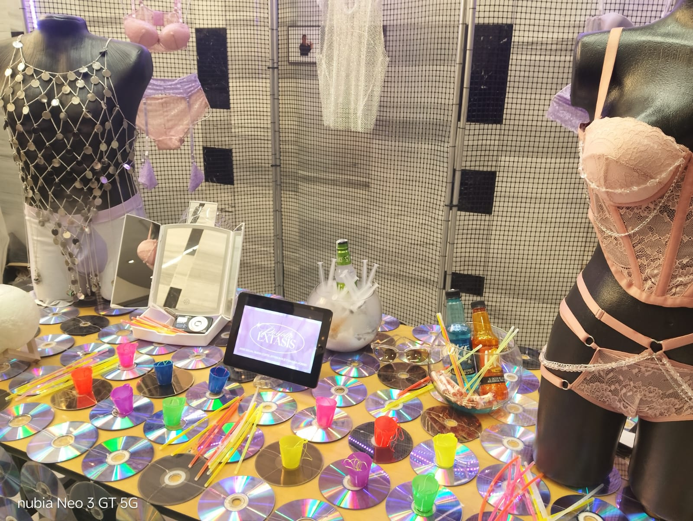
La ponente Sara Viloria abordó críticamente la tendencia contemporánea hacia paletas neutras —grises, beige, blanco— en diseño y cultura visual, especialmente en América Latina. Advirtió cómo esta "cromofobia" refleja una herencia colonial y una lógica de mercado que desvaloriza la riqueza cromática propia de las culturas latinas.
Speaker Sara Viloria critically addressed the contemporary trend toward neutral palettes — grays, beige, and white — in design and visual culture, especially in Latin America. She warned how this "chromophobia" reflects a colonial legacy and market logic that undervalues the chromatic richness inherent in Latin cultures.
"Nosotros, América Latina, nunca hemos sido beige; somos una historia escrita por muchas manos."
"We, Latin America, have never been beige; we are a history written by many hands."
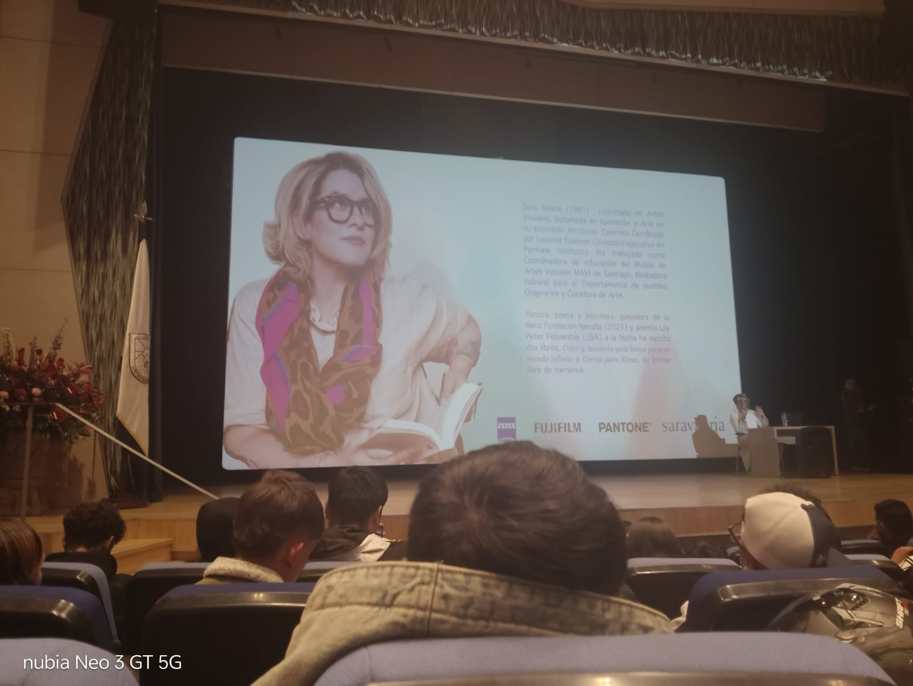
Nacida en 1991, Sara Viloria es licenciada en Artes Visuales, especializada en animación y en la expresión territorial del color. Está certificada como consultora de color por Leatrice Eiseman, directora ejecutiva del Pantone Institute. Ha trabajado como Coordinadora de Educación del Museo de Artes Visuales MAVI de Santiago, mediadora cultural para pueblos originarios y curadora de arte. Es pintora, poeta y escritora, ganadora de la Beca Fundación Neruda (2021) y del premio Lily Peter Fellowship (EE. UU). Ha publicado dos libros: Color y Acuarela y Cartas para Siena.
Born in 1991, Sara Viloria holds a degree in Visual Arts with a specialization in animation and the territorial expression of color. She is certified as a color consultant by Leatrice Eiseman, Executive Director of the Pantone Institute. She has worked as Education Coordinator at the MAVI Visual Arts Museum in Santiago, cultural mediator for indigenous communities, and art curator. A painter, poet, and writer, she received the Fundación Neruda Grant (2021) and the Lily Peter Fellowship (USA), and has published two books: Color y Acuarela and Cartas para Siena.
Haz clic en cualquier imagen para verla en detalle. Cada foto captura un momento real de esta experiencia académica.
Click any image to view it in detail. Each photo captures a real moment of this academic experience.
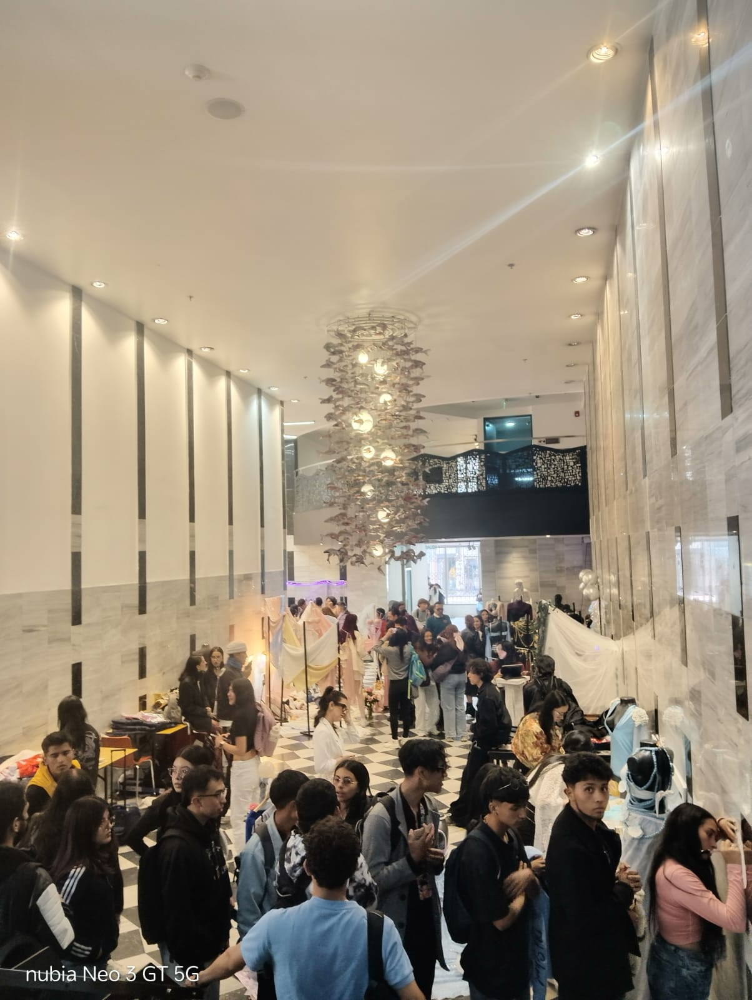
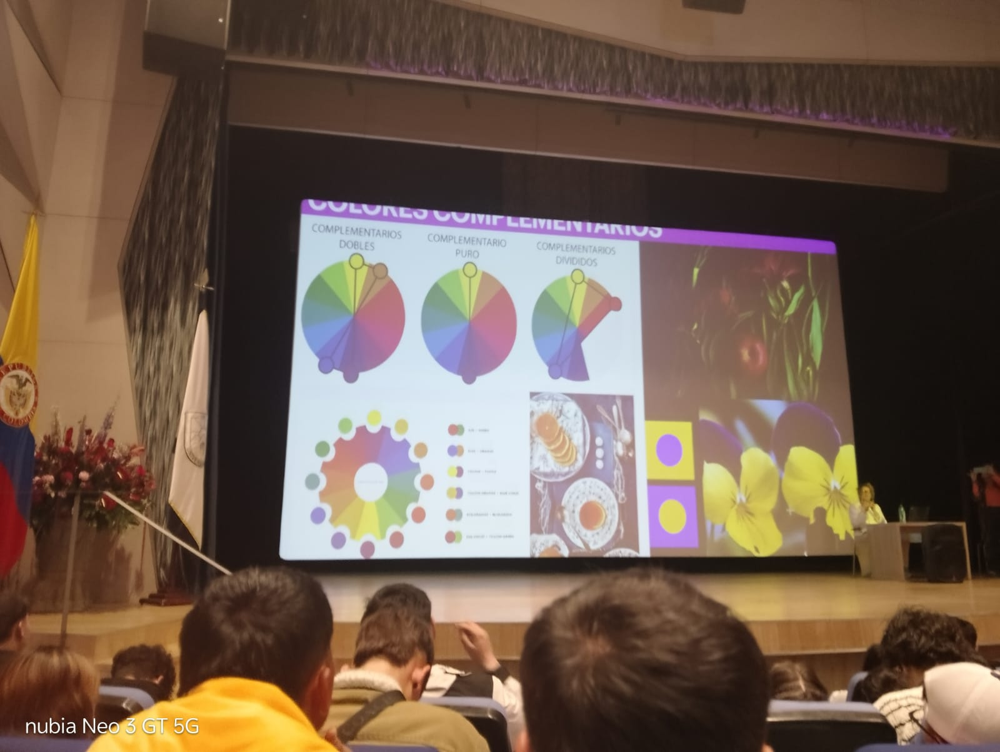
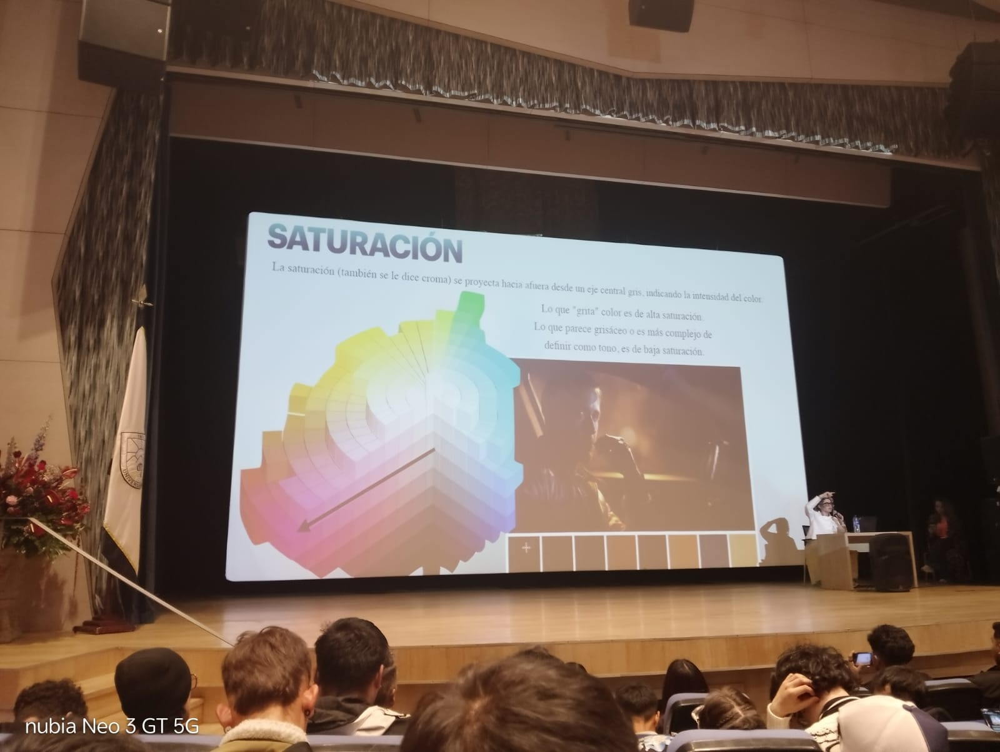
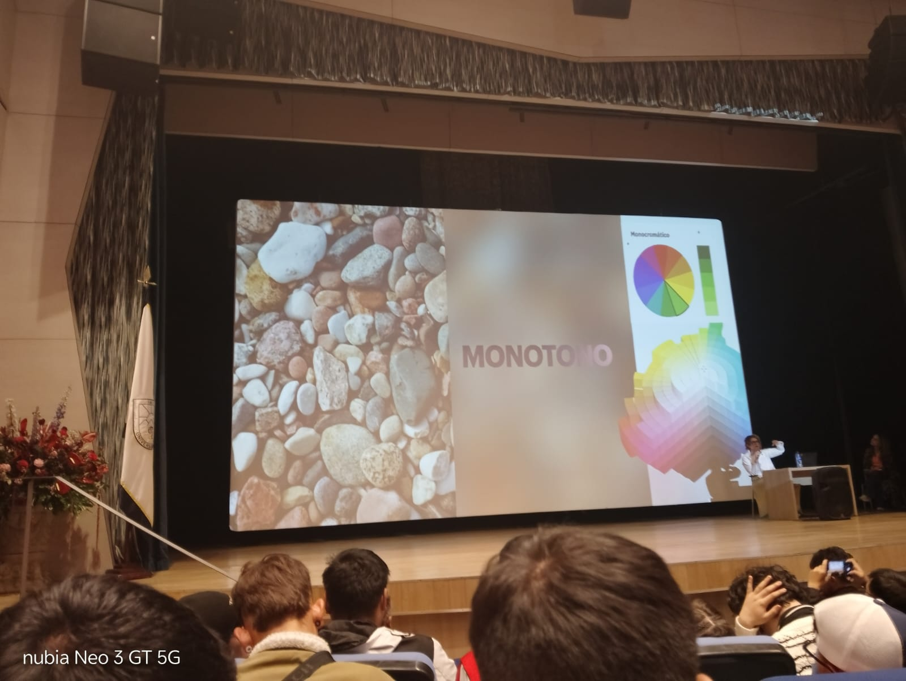
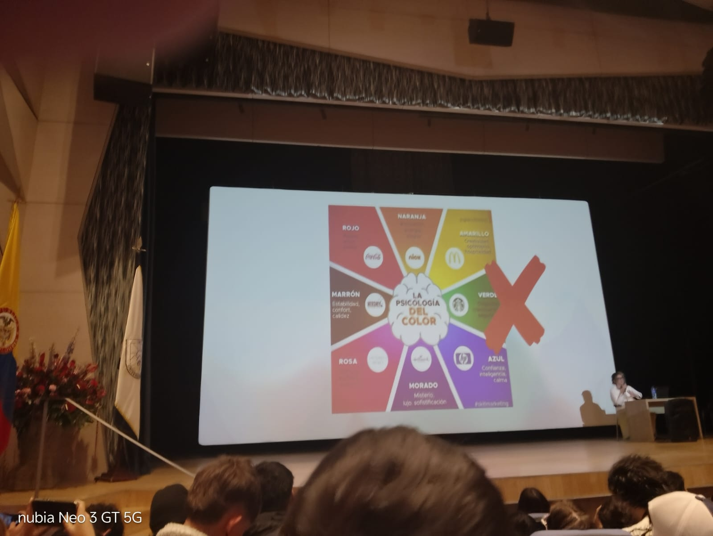
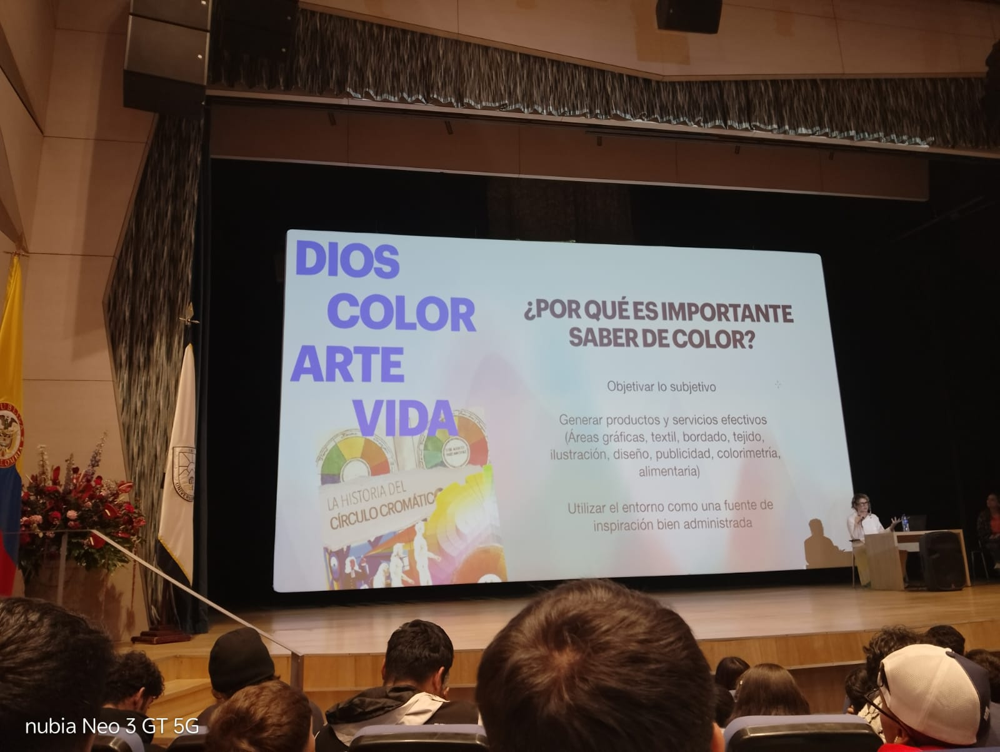
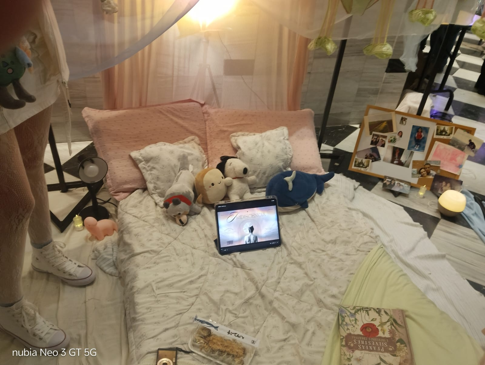
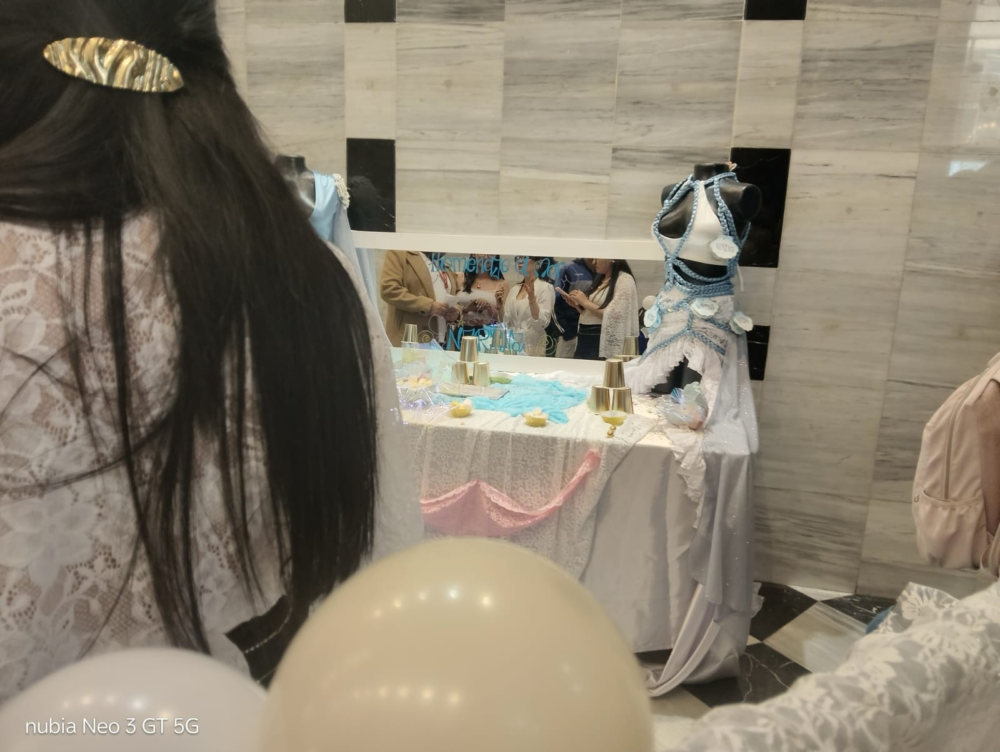
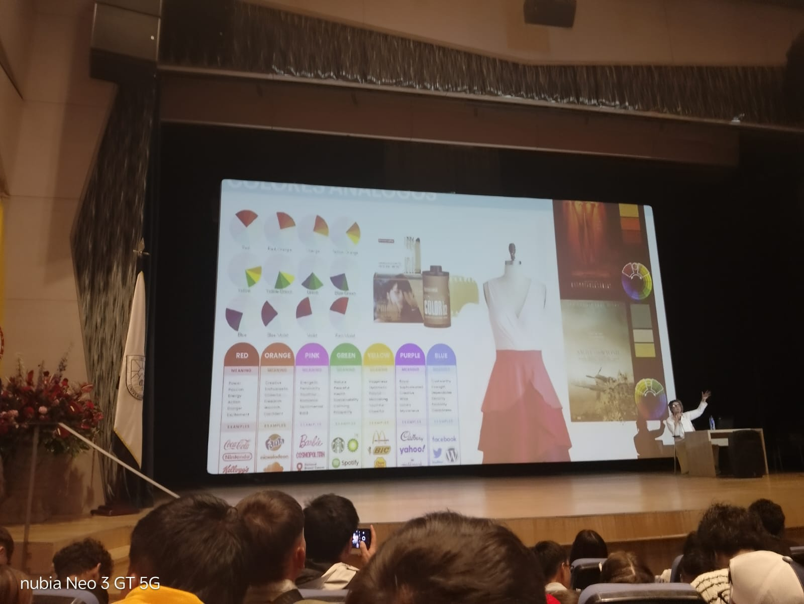
Sara Viloria presentó conceptos técnicos clave que conectan el arte con el diseño digital y la identidad visual.
Sara Viloria presented key technical concepts connecting art with digital design and visual identity.
Los colores opuestos en el círculo cromático se potencian mutuamente. Existen tres variantes: complementario puro, doble y dividido. Cada uno genera contrastes visuales únicos aplicables al diseño de interfaces y al branding.
Colors opposite each other on the color wheel amplify one another. There are three variants: pure, double, and split complementary. Each creates unique visual contrasts applicable to UI design and branding.
La saturación proyecta la intensidad del color desde un eje central gris. Un color "que grita" tiene alta saturación; uno que parece grisáceo, baja saturación. Este principio es fundamental para jerarquías visuales en UI/UX.
Saturation measures color intensity outward from a central gray axis. A color that "shouts" has high saturation; one that appears grayish has low saturation. This principle is fundamental for visual hierarchies in UI/UX.
Cada tono comunica emociones universales: el azul transmite confianza e inteligencia (Facebook, HP), el rojo energía (Coca-Cola, Kellogg's), el verde salud (Starbucks, Spotify). Esta semiología visual es la base del diseño de marcas.
Every hue communicates universal emotions: blue conveys trust and intelligence (Facebook, HP), red conveys energy (Coca-Cola, Kellogg's), green conveys health (Starbucks, Spotify). This visual semiology is the foundation of brand design.
El diseño contemporáneo tiende a paletas monocromáticas (grises, neutros) por razones funcionales y comerciales. Viloria contrasta esta visión reivindicando la riqueza cromática latinoamericana como herramienta de identidad y resistencia cultural.
Contemporary design tends toward monochromatic palettes (grays, neutrals) for functional and commercial reasons. Viloria contrasts this by reclaiming Latin American chromatic richness as a tool for identity and cultural resistance.
Términos clave del campo del color, el diseño y el desarrollo FrontEnd aprendidos durante el evento.
Key terms from the fields of color, design, and FrontEnd development learned during the event.
La charla de Sara Viloria no habló directamente de sostenibilidad, pero su mensaje conecta profundamente con los principios de la economía circular: en lugar de desechar la identidad cultural propia, reutilizarla, recuperarla y regenerarla.
Sara Viloria's talk did not directly address sustainability, but her message connects deeply with circular economy principles: rather than discarding one's own cultural identity, the goal is to reuse it, recover it, and regenerate it.
Rescatar herencias cromáticas culturales en lugar de descartarlas por modas globales.
Reclaiming cultural chromatic legacies instead of discarding them for global trends.
Diseñar interfaces y productos digitales con propósito, minimizando el desperdicio visual y la sobreproducción estética.
Designing interfaces and digital products with purpose, minimizing visual waste and aesthetic overproduction.
Aplicar código limpio y eficiente en proyectos FrontEnd reduce la huella digital y el consumo energético de los servidores.
Applying clean, efficient code in FrontEnd projects reduces the digital footprint and server energy consumption.
La industria de la moda es una de las más contaminantes; integrar principios circulares en el diseño de moda es urgente y necesario.
The fashion industry is one of the most polluting; integrating circular principles into fashion design is both urgent and necessary.
Cómo este evento académico transformó mi comprensión del diseño visual y su relación con el desarrollo FrontEnd.
How this academic event transformed my understanding of visual design and its relationship with FrontEnd development.
"Ver cómo el color puede ser un acto político y cultural me hizo repensar cada decisión que tomo al diseñar una interfaz."
"Seeing how color can be a political and cultural act made me rethink every decision I make when designing an interface."
Participar en Moda ECCI fue una experiencia que desbordó los límites del aula. La charla de Sara Viloria conectó conceptos que en teoría parecían distantes —la semiología del color, la psicología visual, la identidad latinoamericana— y los volvió herramientas concretas para mi trabajo en FrontEnd.
Participating in Moda ECCI was an experience that broke the boundaries of the classroom. Sara Viloria's talk connected concepts that seemed theoretically distant — color semiology, visual psychology, Latin American identity — and turned them into concrete tools for my FrontEnd work.
Aprendí que elegir una paleta de colores no es solo una decisión estética: es una declaración de identidad. Aplicar la teoría del color de manera consciente en interfaces digitales no solo mejora la experiencia de usuario, sino que comunica valores, emociones y pertenencia cultural.
I learned that choosing a color palette is not just an aesthetic decision — it is a declaration of identity. Applying color theory consciously in digital interfaces not only improves the user experience, it also communicates values, emotions, and cultural belonging.
Los stands del evento también fueron reveladores: cada diseñador estudiantil usó el color con intención, creando mundos visuales completos a partir de una paleta coherente. Eso es exactamente lo que aspiro a hacer en cada proyecto web.
The event's stands were equally revealing: each student designer used color with intention, creating complete visual worlds from a coherent palette. That is exactly what I aspire to achieve in every web project.